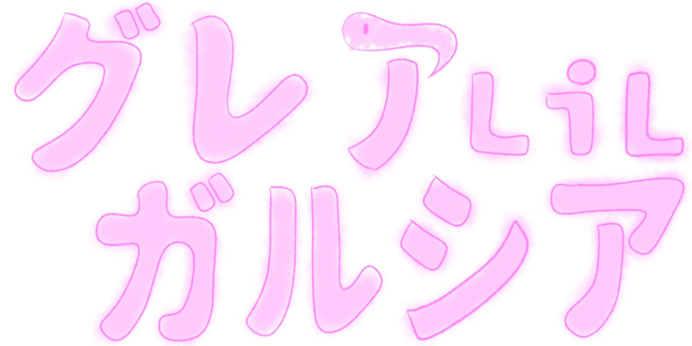

PROFILE
プロフィール
RECORD
活動記録
NEWS
ニュース
MOVIE
動画

プロフィール
profile
名前：グレア.LiL.ガルシア
誕生日：2月6日
身長：140cm
ママ：
鶴崎貴大
活動記録
record
※記録方法の仕様上データ更新に若干のラグがあります。最終更新：11月19日
ニュース
news
Tweets by Gurea_2626
※記録方法の仕様上データ更新に若干のラグがあります。最終更新：11月19日
おすすめ動画
movie
ホームページ制作
home page staff
企画・制作
サンライズ
@sunrise_xor
デザイン
トガイ薙帆
@togai_nagiho
協力
ロック
@rock_wave_yuri